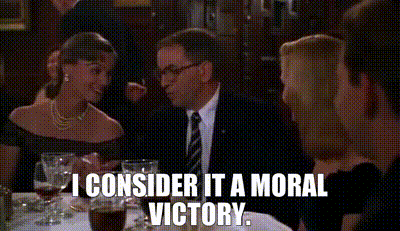
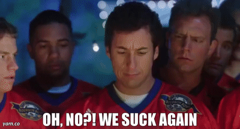

Projections lied to some of you. Let's see who.
Sorted by Diff (actual minus projected) — biggest overachievers on top, for max drama
| Team | Manager | Proj | Actual | Diff | Grade | Res |
|---|---|---|---|---|---|---|
| Waddle On Deez Nuts | Lucas McMahon | 211.6 | 257.7 | +46.1 | A+ | L |
| Kenz VishusLicks | Ken Glover | 226.4 | 269.1 | +42.7 | A | W |
| MaHOMELANDER | Kevin Guest | 263.1 | 277.4 | +14.3 | A- | W |
| Hurt Me Moore | Joydip Joy | 261.5 | 261.5 | -0.1 | B+ | W |
| Donuts All Day 24/7 | Alby | 238.7 | 228.8 | -9.9 | B | W |
| Covfefe is for Closers | David Pannell | 248.9 | 227.4 | -21.5 | C+ | L |
| Sutton My Face | Ryan Guest | 255.3 | 224.1 | -31.3 | C | W |
| Nabers ate my Zombies | JJ | 241.8 | 208.3 | -33.5 | C- | L |
| Texas Determined Domination | Kolby Gilseth | 242.1 | 203.3 | -38.8 | D+ | L |
| Catchy Football Name | McCarty | 227.7 | 162.0 | -65.7 | F | L |
Grade reflects performance vs. this team's own projection, not raw score — beating a low projection can outgrade a loss, and blowing a big one while still winning can still land a C.
The single best statistical week anyone put up all league, and it comes with an L attached. Dak Prescott dropped 58.7 points, Travis Kelce added 32.35, and Chris Olave, George Kittle, and Jaylen Waddle all beat their numbers too — practically the whole roster overperformed at once. Unfortunately, the other side of that matchup also had two quarterbacks go off simultaneously for a combined 110+ points, so Lucas's best week of the season so far still ends 0-2. Cruel game.

The single worst miss in the league, and it wasn't close. Drake Maye — McCarty's own OP starter — put up 17.9 points on a 37.7 projection, less than half. Jayden Daniels and Justin Jefferson both busted too. Lost by 62 points to a Sutton My Face team that also underperformed its own number by over 30 points; Catchy Football Name still found a way to be worse.
